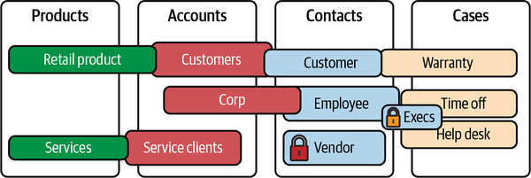
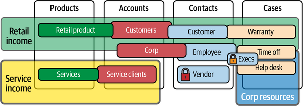

The Salesforce platform is extremely mature in many areas. It’s especially competent for small to medium-sized implementations. When you’re unlocking all of the power of the platform for large sets of functionality or customization, you will need to build processes to suit the situation. In this chapter we will discuss some of the governance challenges you may face with Salesforce and how to deal with them. These aren’t necessarily weaknesses of the platform, just areas that you should plan for. I have covered some of these topics in the previous chapters while discussing different features. Here, we’ll expand on these extra patterns you may need to follow if you plan to grow. This should also help you predict which growth frameworks you might want to adopt before doing so becomes difficult. My primary goal, as in the previous chapters, is to enable a better understanding of the Salesforce platform. Most of the solutions presented here are common sense once you fully understand all the components in play.
Most of the topics discussed here tie back to a common theme of potential technical debt. These types of debt are possible due to a combination of features or gaps in the Salesforce platform, and not all of them will be relevant to your situation. We will look at many of the challenges you may face and talk about a few of the ways to solve (or at least attenuate) them. These approaches are not one-size-fits-all, and this chapter is not intended as an instruction manual; you may need to adapt them and should only implement those that are likely to provide value. As with all things, you should right-size your investments, aiming to mitigate risks that are likely. Looking ahead and attempting to solve tomorrow’s problems today can pay off big in the long term.
Returning to the original premise of Chapter 1, Salesforce is not a single SaaS application. It’s a robust infrastructure capable of delivering many different types of functionality, both purchased/licensed and personally built. It’s easy to build solutions with speed and scale, but anything you manage to build “fast, cheap, and good” can lead to different types of sprawl and issues that must be addressed somewhere down the line. If you intend to use Salesforce at scale and roll your own solution, you’ll need governance and discipline. Put another way, we’ve outlined all the gears and cogs, and now we’re looking at where you may need to apply oil or schedule maintenance.
For each of the following topics, we will start by discussing the problems and their roots. Hopefully, knowing how something can get out of control and end up needing governance will shed light on how the systems at play work. Many of the “concerns” described here are common to other systems and/or cloud platforms. Actually, almost all of them are inherited from the underlying technologies they are built on, with their strengths and weaknesses. Salesforce is, of course, built on many standard technologies and is only unique in its approach and how it combines them. After discussing each concern, I’ll talk about some of the governance strategies you can leverage to mitigate that concern. These, too, will be common strategies used in other systems. The only mildly unique challenges with Salesforce come from the features that make traditionally difficult functionality easy for users or developers—Salesforce, like all platforms, can suffer from the overuse of its strengths.
The term data can have many connotations within the IT vocabulary. Accordingly, many types of data governance may be required to keep your organization healthy. Salesforce handles some governance duties for you with features like automatic indexing, precomputed sharing rules, and relationship limitations. However, there are many other types of data management that you will need to keep in scope as you grow.
Using and reusing the standard objects, like Account, Contact, and Case, is strongly encouraged. When the data already stored in an object like Contact is similar to a new use case that you have, it is best practice to reuse that existing structure, even if you have to adapt it slightly to your new needs. For example, the Contact object might house information about your customers, but you might have a new requirement to store information about your employees. This should be an easy fit for the Contact object. You can either create a new RecordType or just add a new value to the “Type” picklist and have the options be either “Customer” or “Employee.” You might choose to use a new RecordType if you are concerned about the security being different around the two types of Contacts. Otherwise, making sure that all connected functions know that there are two types of data in the Contact object is pretty easy.
Fast-forward a few years into the future, though, when you have 10 different types of Contacts in the Contact object. Different teams working with the data in the Contact object can step on each other’s toes. This can lead to confusion and data leaks from a security perspective. It’s even more likely that shared data fields will cause problems when validation rules or automation routines break when changes are made. Multiply this by dozens of shared objects and even a few teams, and you have a recipe for chaos. Following best practices and keeping the data structure too simple can actually have the opposite of the intended effect; overusing objects can make learning the underlying data concepts more difficult.
Team growth and turnover is another important factor to keep in mind when it comes to managing data definitions. There is a large performance penalty if you cannot quickly explain your data schema and relationships to incoming members of your teams. Complex, poorly documented systems lead not only to confusion and slow onboarding, but also costly mistakes.
Managing and communicating the semantic meanings of data is not a very technical chore. Diagrams with definitions and boundaries can be maintained by any participant in the project lifecycle. Mature organizations will merge an existing master data management or data architecture practice with every application platform. Maintaining a record of data definitions and scope—a business glossary—is core to data architecture practices (or should be). You should maintain a business glossary even if you are not incorporating Salesforce data into any other systems. ERDs can also be built with layers and transparency to assist in understanding realms and relationships. Figure 12-1 illustrates one way to map relationships between objects that have multiple definitions. Each substantially unique definition of the same object gets a representation. You would want to add a definition of each of these representations to your business glossary, outlining how they are different.

You can also add additional dimensions to the data with a bit of work. Figure 12-2 shows additional shapes used to group together different object use concepts. If it gets too difficult to draw in two dimensions, then imagine how hard it is to learn these concepts without the drawings! Maintain a slideshow or PowerPoint deck if you have too many items to explain simply in a single diagram.

This may seem simple, but it’s seldom done and even less often maintained. Different data structures with different definitions or behaviors within the same object are very hard to track without a proper map. In Salesforce this happens by design, so you must exercise extra discipline to manage that complexity.
Another potential problem that can get away from you is having too many fields or relationships. It’s a fairly common practice to create extra fields to make visualizing relationships and building reports easier. Beginning builders often create lots of fields to hold flattened hierarchical data updated by “onchange” triggers. These normalization and other wasteful practices can rapidly take you close to your limits for fields and relationships, which can stifle your plans in the future. Different objects can also have different limits, so it’s important to set up guidelines for their use. A few extra fields here and there aren’t a big problem, but they can add up over time. You should start tracking your data definitions early, because tracking them down after they are created is time-consuming.
As you ramp up your usage of Salesforce, you should implement tracking and review processes for all of your key objects. Automating reports on field usage and highlighting the growth rates will provide perspective on the evolution of your Salesforce environment. Having a curated data dictionary with a change history will prevent many problems, but only if you review and update it frequently and share it with others. I would love to see Salesforce add the functionality of a change history for setup changes. It does provide a static “Description” field for fields, which can be used in tandem with an extract process to keep a change log, but this requires some extra effort from users. Having a tracking form as a required process for users to propose new fields and changes can be useful. This form or log can be kept in Salesforce and shared with stakeholders swiftly via reports or permissions.
Many of these mitigation strategies will require a lot of incentivization, because the benefits are seldom appreciable in the short term. Making sure to regularly highlight and reward thoughtful stewardship can provide a meaningful incentive for teammates to take the chore seriously.
Data storage inside of Salesforce can be costly from a licensing and productivity perspective. Salesforce is heavily tuned to be performant with many small exchanges of data. Manipulating large pieces of data, like files, is not the best use case for the platform. That said, Salesforce’s attachment and file storage system has evolved over the past few years, getting more robust and performant. It now uses a binary object store structure, as opposed to BLOB storage that was more closely tied directly to object records. File storage incurs less of a resource penalty than file manipulation. As a multitenant system, memory for operations comes at a premium; more available memory means more customers per unit of hardware. Reading files into memory for alteration is hard to justify due to the very sporadic nature of the resource use required. Functionality is limited either by choice or by necessity within the platform to further the larger goal of multitenant use.
When looking at licensing options for a long-term storage scenario, many customers will opt to use a third-party storage provider. In my travels, Amazon S3 is the most prevalent. There are a few third-party plug-ins that convert your Salesforce org to use remote storage almost invisibly to your users, and for large organizations the cost savings are compelling. Leveraging a more file-centric system like S3 can have other benefits as well. Just remember to plan for some extra work for integrations and compliance.
Forecasting your processes’ dependence on files prior to building automation or processes can save valuable time down the road. You can decide in advance how much file storage space you’ll need, what integrations you’ll require (like DocuSign), and what manipulations you’ll need to perform (like encryption or watermarking). This kind of planning can force some conversations about retention and encryption at the same time. It’s less hard work than some of the previous chores; you just need to forecast, price, compare, and optionally buy. It’s quite nice when architecture challenges strongly resemble a day of shopping. Take advantage of the opportunity.
Salesforce comes with a growing suite of tools to help manage security concerns. Getting a full grasp of security for an org is difficult due the variety of security structures in the platform. Some of them are easy to see and manage, while others require some digging. Good security can be defined as providing effective and reasonable protection of assets according to their value (or cost) if compromised, stolen, or destroyed. The more valuable or sensitive data is, the more steps should be taken to secure it. There are primary and secondary types of value. Primary value is measured solely in terms of the intrinsic value of the data. An example is the financial loss caused by fraudulent charges after a breach involving stolen credit card numbers. Another example is the work required to rebuild a piece of code that was deleted or maliciously encrypted for ransom. The secondary value is related to the loss of trust or faith in a brand or service offering after a breach or misuse has occurred (which can lead to lost customers/sales). Calculating the secondary value of data can be difficult, but this is an entirely necessary step in determining how to appropriately secure it.
While Salesforce is not impenetrable, as a customer, the security of the platform is not something you need to worry about. Salesforce is constantly testing its systems against known and newly discovered vulnerabilities. As a potential customer, you can validate this yourself prior to purchase. As an architect, you should primarily be concerned with configuration blunders that might allow your data to be compromised. Configuration-based breaches and compromised accounts are the most prevalent security threats to your data in Salesforce. The threats you need to address are the people you give access to and the type of access you give them.
If you don’t understand your data, you cannot secure it. It is possible to create a permission structure called “Read-Only Web Service Case Summary Profile” and allow it to have Modify All Data permissions on the entire Salesforce org. You could then grant that right to every member of the corporate softball team. It would take a very meticulous reviewer to think to check that very specifically named profile for excessive permissions. Things like this have happened, but these are not technical deficits or weaknesses in the platform; they are unbridled capabilities that require awareness, experience, and dedication to manage.
To resolve problems with data security, you attack it from two sides. The first part of your task is keeping track of where your valuable data is located. Do regular scans for personally identifiable information (PII), personal health information (PHI), and payment card industry (PCI) data. It’s strongly recommended that you use third-party tools with support for changing heuristics to keep data from evolving outside of your oversight. Salesforce has added some specific features to help you track where different types of sensitive data are stored, but these features only work if you enforce and regularly review them.
The second, equally important factor to manage is how users are getting access to data. I find it invaluable to define personas at the first imagining of any project, making sure to include all the possible candidates. Evaluating contrasting access types can help define how some users will be different from other users. Each persona must be able to claim their right to exist in the whole org security model. Defining these user domains prior to the start helps ensure that the first team doesn’t build a security structure that only suits their purposes.
Profiles are the easiest security structures to understand within Salesforce, but they are intrinsically inflexible and inadequate for managing complex or multiple application structures. Nevertheless, the majority of large implementations that I see are still built upon them. The biggest hindrance with profiles is that you can only assign a user to a single profile. A given persona might need to have many access rights for some functions and fewer rights for others, but profiles don’t support different personas having different roles depending on the application. Profiles also contain the license that the user is granted. Ideally, this will be the only thing that profiles are used to manage.
As use cases requiring many different types of users to be able to live in harmony and securely share Salesforce grow, the utility of profiles shrinks. Shop your profile-based security plan around to various experts, and trust the ones that say to build around permission sets and permission set groups instead. The newer permission set model allows for multiple relationships, which makes it easy for you to dream up different roles and functions and assign them to whatever combinations of users and groups you need. Seek good advice on how to build a security model that is extensible and easy to read and review.
Managing the data and permission pieces separately is important from a technical perspective, but an understanding of how they all function together is even more important. Understanding the effective permissions of a user or group can reveal many data and security problems. It is very often the reflex of builders to just check boxes until something gives an expected response. If you have the team resources to specialize, separating security model builders from functional builders works well. Make your builders test the functionality of your security models as a form of quality control. Junior builders learning on the job might not understand the full breadth of implications of a security change. Your first (and most important) creations should be an effective and complete data model and security model. Next should be the processes to securely maintain and update them.
Finally, educating your in-house security team can create synergy. Show them how to probe and test security with you. Many organizations, even those that are making heavy use of cloud-based assets, have struggled to bring their security practices in line with modern cloud concepts. There are so many cloud providers, each with their own unique security surfaces and paradigms to understand how to secure; keeping up with even a few is challenging. Create a security review plan of items to check and investigate regularly. Schedule time for yourself to complete this process as often as you can. Invite your security peers to your review sessions. Set a separate recurring goal date to generate a summary of your findings, and another meeting to review that with technical teams and stakeholders. These meetings may be poorly attended, but you should use them as incentives to execute your plan.
Visiting your Salesforce Security Center can help you build and validate your plan. It assembles many pieces of information that can be used to start an investigative review process. This summary site is a great tool to share with security teams for independent inspection. If you are the person primarily responsible for the secure management of your Salesforce implementation, you’ll want as many eyes on it helping you as possible.
Architects and other Salesforce adepts should bridge the gap for security stewards. Security teams that are not informed will either stifle the productivity that’s possible with the platform or not protect what needs to be protected. The least transparent and open subject matter expert should shoulder the blame for breaches. It is the responsibility of the most knowledgeable to educate. Salesforce well-governed is not possible without security and compliance well-informed.
It is alarmingly easy to spin up copies of your Salesforce org. Any administrator can do it. These copies, referred to as sandboxes, may contain complete copies of your production data, or just a select amount of data from the parent org. Their capabilities are completely standalone, but they’re still recognized as belonging to your company. Once created, the security restrictions for a sandbox can be changed, reduced, or removed altogether. Many of the largest public breaches in security have happened via non-production systems. SSO and multifactor authentication (MFA) are expensive, from a license and resource perspective, to use in every sandbox. However, if your production source code has value, then all of your sandbox orgs must be secured according to that value.
Sandboxes are valuable tools for trying new functions without impacting the production environment, especially considering the speed at which they can be created and refreshed. They’re often used as playgrounds for users to learn how to use the advanced capabilities available to administrators. Care should be taken when doing this, though, as giving a user administrator rights grants them the right to create other administrator users and to expose all the data and code contained within the sandbox to anyone they like. They can bypass any and all restrictions originally put in place, like SSO and network range restrictions. Sandboxes may also not be included by default in identity management processes that deactivate former employees’ accounts. These non-integrated accounts may remain active for former employees or bad actors to compromise.
Sandboxes should not be treated like playgrounds for just anyone. The free and public Salesforce training system, Trailhead, provides ample scope for those wishing to learn and experiment to do so in a safe environment. Put some educational barriers in place, and make sure users are trained on proper Salesforce usage principles before considering handing over control of a copy of your production org. Going through Trailhead training will also help introduce users to the free and safe options that are available. Because Salesforce usually includes more of the smaller developer environment creation licenses than you’re ever likely to need, they can be treated as free assets to use at just about any pace.
Placing sandboxes in a secured pipeline to ensure a well-regimented development process is a very standard process. When they are respected and managed as peers to production, sandboxes are fairly easy to manage.
One of the most common patterns that is recommended but not enforced by Salesforce is to immediately clone the default System Administrator profile and remove many of the key capabilities from it. Pruning all of the dangerous permissions out of the source profile to make a safer child copy involves a decent amount of work, but as long as SSO and MFA are locked into place with other strict peripheral security components, this can be a very stable pattern for development and research.
The looser approach of letting anyone create a sandbox is doable, but it requires more oversight. Regular user rights reviews should be scheduled or scripted to ensure that no users remain in the system for much longer than necessary.
One strategy I’ve used in the past to secure access but keep independent processes enabled was to run a script monthly on all loose orgs that would deactivate all user accounts except for that of the person that “owned” the sandbox. The owner’s password would then get reset. This meant that once a month, the owner would have to fix their password and click a few checkboxes to re-enable anyone they thought still needed access—just enough effort to get them to actually consider whether each user was worthy of being reinstated. This rather brutal approach also has the added benefit of flushing out any sandbox that has lost its owner or had its ownership unofficially transferred to someone else. Issues like these should be quickly corrected. A more likable architect might have kept a list of stakeholders and spent a considerable amount of time polling the named owners and waiting for them to reply, but shaking up access quickly brought the discussion directly to me. With appropriately justified circumstances, service could be restored in minutes.
A lot of data is automatically copied from production when a sandbox is created. You might need to tweak the migration code to filter, block, or mask sensitive data as it is brought into a sandbox with more lax controls than production. Setting up processes to custom-craft your sandboxes to be harmless environments that are unlikely to leak data can greatly decrease your high-risk attack surfaces from a security perspective. This is another really good discipline to graft into your organization as early as possible. I’m not aware of any tools that can do this automatically, by click configuration only. If someone builds something that does, buy it.
As detailed in Chapter 8, there are many options for customization within the core and extended platform components. There is also a significant amount of freedom to make a grand mess of things. Salesforce is slowly adding management features for code and automation, but there are large gaps to fill. Some of the practices you need to apply are almost a community standard at this point, but there is much that will require effective processes and determination.
In the core platform, there are two mature automation frameworks: Apex and flows. In addition, depending on how you count them, there are seven visual interface frameworks: page layouts, Lightning pages, VF pages, Aura components, LWC, screen flows, and OmniStudio. This already long list omits the mobile variants. Each of these frameworks is organized and managed in different ways. Some of them are only accessible from a code editor, and some from the web interface. Some of them are available in both. Elements of each of these frameworks can be working on the same data at the same time. Interactions and automation can include multiple instances of different components within a single page. It’s fairly easy (and fun) to build these many-headed monstrosities; as usual, the hard part comes later, with maintenance and review.
Apex, LWC, VF, and to some extent flows have almost zero grouping controls. To use an older analogy, every file in each is in the same folder. All of them. And only sometimes are you able to sort them alphabetically. There’s no way to group them, tag them, or arrange them other than by giving the files meaningful names. (Spoiler: you should give files meaningful names!) There is no requirement to how you name an Apex class or trigger file. You could create 10 different trigger code files that all run off of the action of an Account record being deleted. All your files could be named with random numbers or after your favorite Pokemon. If you have a sufficient number of developers working on your project, you will run into some variation of this problem. On top of that, each unit of code (component) can call other units of code in the same framework or in entirely different frameworks.
There is a primitive implementation of a “namespace” available for some types of code, but it’s not always usable. It is only applicable to distributed packages. The combinatorics of all the files in each of the frameworks with varying approaches used for each adds a huge burden on newcomers trying to reverse engineer processes. Not having a clear code organization severely decreases productivity and slows time to market.
Start by defining a scaffolding based on capabilities. Successful enterprises manage their applications according to which of the common business capabilities they map to. I have seen several organizations utilize the map provided by LeanIX (registration required) as a foundation. Once you have the major and minor functionality sketched out, you should move on to descriptive definitions. With a full set of functions and definitions, you can start to come up with naming conventions. Use your naming schema in all appropriate places, like filenames, function names, field names, and names of function-specific objects. If you are building within existing functionality that is already well defined, naming schemas are less important. Being consistent with any plan delivers most of the benefit of using one. Even a terrible naming schema, if applied consistently, is better than none at all.
Be as specific as possible when creating your functional definitions. If you start with very broad terms, getting more specific later might be a problem. It can take a lot of work to go back and correct all of the places where you’ve used a poorly selected name—so much work that it is seldom prioritized and done. You should do your best to get things right in the planning stage. Your choices will likely be permanent. The diagramming exercises from Figures 12-1 and 12-2 can be valuable tie-ins for your naming schema.
Avoid using branded terms or project names in naming schemas. Terms that do not directly describe the actual function of an application or set of features add an extra layer of translation. Project code names are also temporary and may be changed often. Avoid the temptation to document an acronym or abbreviation. You can abbreviate things in PowerPoint decks, emails, and other time-bound communications, but spell them out in your naming schemas and labels. Use clear, full words in code that will outlive transient messaging and work teams. If you must shorten or abbreviate words, make sure the short forms relay meaning; don’t just use the catchy acronym that was used in the budget meeting. The people that will have to read your documentation and understand your application after you have been promoted will thank you for your hard work.
Another good practice can be incorporating a hierarchy into your naming schema. Try to limit the levels by using dot notation in your prefixes, with underscores (_) instead of dots. This can bring a lot of clarity. For example, HR_ONBOARD_docusignSend() and IT_ONBOARD_badgeSend() are clear method names that carry a decent amount of information. Being able to read method names and guess correctly what they do greatly shortens debugging, learning, and research times.
As a slight tangent, your functional mapping exercise is a great opportunity to find and name business stakeholder champions. Having a strong process owner and system proponent can greatly improve the perception and adoption of your platform. Building business functionality without business support is a dreary prospect. You want to build things people want to use.
Since both Apex and flows have object triggers that can fire on record changes, it can be difficult to understand what has been triggered by what and which order they execute in. There’s also a possibility that each of those flows, actions, or triggers could cause something to happen that would call another version of itself. This could lead to an infinite loop and locked records or processes. There is no automated way of tracking or dealing with these race conditions. (Race conditions is a name given to a problem that became common during the switch from single to multithreaded operations; code had to be refactored to handle the resource contention caused by multiple processor threads trying to lock or access the same resource at the same time.) Another analogy is order of operations in mathematics. The Apex Developer Guide lays out the order of execution of events on the Salesforce server; this is the default path of actions that will be performed during a database transaction. But what if it doesn’t work for your needs?
You can leverage trigger-handler frameworks to organize code execution timings and helper functions. Using trigger-handler frameworks is standard practice among the Salesforce development population. The commonly accepted standard is “one trigger (file) per object.” A short description of this pattern is that you designate a single file for each object to act as the controlling trigger code. Inside this single file, you designate all of the other helper functions to be called, and in what order they are called. Having just one file per object isn’t mandatory, though; the important thing is to have a pattern, keep it simple, and follow it.
Many people try to apply this same pattern to flows, but because flows do have some actual restrictions on complexity, it doesn’t transfer well. There are some emerging Apex trigger-handler framework patterns that attempt to incorporate flow orchestration as well; as flows gain wider adoption as a first-order tool, we should start to see more mature patterns that achieve this goal.
Salesforce offers a wide variety of features and tools, and naturally many groups will want to use them—but managing different types of teams with different processes in the same organization can be a challenge. Salesforce does not have management controls that allow you to give developer-level access to only certain areas or objects. It’s all or nothing. Teams or departments that want to be nimble and use simple flows, or even just add a field to a page, need full admin access. Should those simple productivity builders be forced to learn Jira and Git and staff a QA team? As that clearly wouldn’t be practical, many organizations instead choose to restrict access to these features.
The best practice is to scale your change processes up according to the sensitivity of the data and the access value of the entire system. You can always make concessions for trusted partners, but those come with risks that you must accept.
Adding new developers to a shared ecosystem is great, as long as you are able to trust them to isolate risks to other processes effectively. If you have a willing and capable resource pool, turning them into citizen developers can yield significant productivity boosts. In highly technical organizations with a large pool of tech-savvy employees, a strong case can be made for a multi-org strategy for your implementation. This means that you’ll be maintaining more than one independent Salesforce instance: different sets of users and potentially different components and discrete integrations. You can use one org for fast and casual goals, and another for more sensitive or critical goals. A multi-org strategy may also be appropriate if you have multiple types of highly sensitive data or processes.
Another option is allow the two different styles (fast and nimble vs. secure and stable) to work independently in different sandbox environments. Manage your nimble citizen developer org with change sets with a very limited scope in a special sandbox, and everything else via more involved change control processes. A qualified administrator will need to be in charge of merging the nimble changes into the production org. This takes additional support and buy-in from compliance teams, but it can be a good compromise to enable people. If you have team members willing to do the work to build valuable assets, find a way to say “yes.” If you don’t, they will likely find someone who will (or even worse, they’ll stop asking). A good architect will weigh the value of the human effort required against the value of system stability and design accordingly. This is another component of the UX Architect role, which is discussed in Chapter 11.
The aim of this chapter was to outline some of the challenges you might face as a Salesforce architect as your implementation scales, and how to deal with them. Little of what we’ve discussed here is completely unique to Salesforce; Salesforce just has a unique assembly of quirks that require a unique application of standard management practices. There is no single recipe for how to architect the perfect system, but there are many sets of trusted heuristics and patterns that an experienced architect can apply once they can see an outline of the system. Not all of these concerns will apply to every scenario, and many are questions of scale and circumstance. It’s important to be aware of the potential consequences of the changes and decisions you make as you build a system. Hopefully this chapter has provided some insight into the areas you will need to observe and some ways you can adapt as your implementation grows. An understanding of some of the governance processes that are regularly required will help you better understand the platform, as well as where and why you might need to put additional platform management practices in place. You should think of this as a starting point, however, and not an exhaustive list: you will continue to identify important architectural concerns that relate to the finer details of each system that you learn.
Peer: Architect, what is best in life?
Architect: To crush your vulnerabilities, see your outages reduced to zero, and hear the exaltation of your users.
Conan the Architect